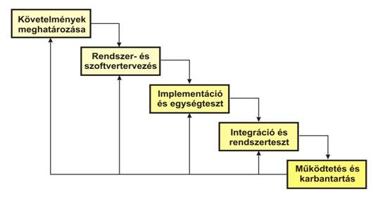
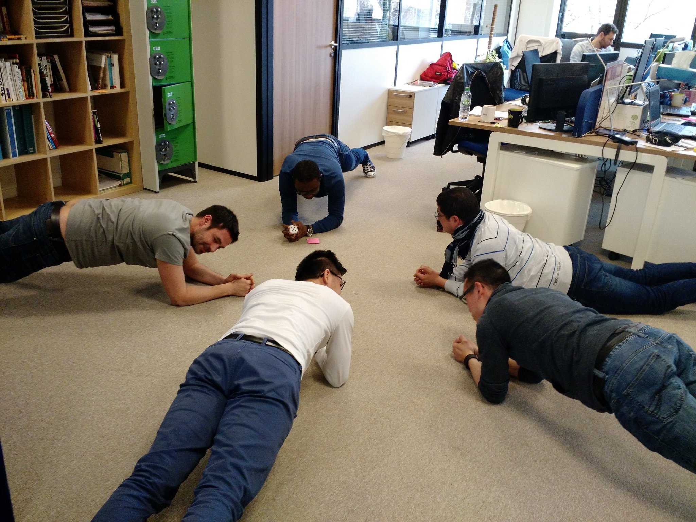
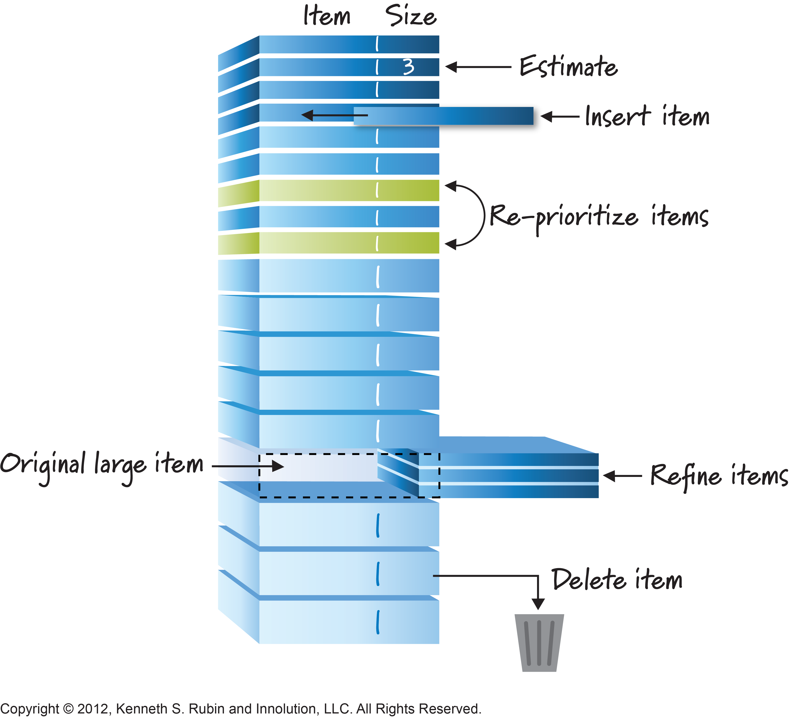
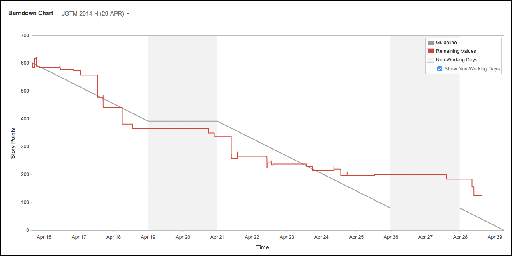
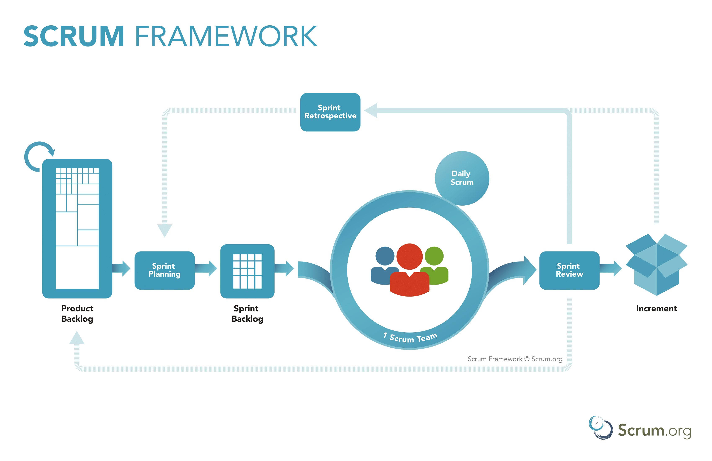

Agilis szoftverfejlesztés
Készítette @gergely-nagy
Mit hívunk agilis szoftverfejlesztésnek?
Előzmények
Nehézségek
- Technikai és nem-technikai egyének szükségszerű, de nehézkes kooperációja, kommunikációja
- Projekt célok nehéz meghatározása
- Kiszámíthatatlan kihívások
- Nehéz becslési és előre látási folyamat
- A felhasználók és a megrendelő nincsenek tisztában a technikai nehézségekkel
- Technológiák gyakori változása
Vízesés modell
Vízesés modell
- Szekvenciális modell, nem iteratív
- Az ügyfél nem feltétlen tudja pontosan a saját követelményeit anélkül, hogy a már működő szoftvert látná.
- Tervezéskor a fejlesztők sincsenek tisztában a kódoláskor előjövő nehézségekkel.
- A változó követelmények bevezetése vagy tervezési hibák feloldása bajos.
- A termék első verziója csak a folyamat közepén/végén készül el.
Manifesto for Agile Software Development
(2001)
- Kent Beck
- Mike Beedle
- Arie van
- Bennekum
- Ward Cunningham
- Martin Fowler
- Jim Highsmith
- Andrew Hunt
- Ron Jeffries
- Jon Kern
- Brian Marick
- Steve Mellor
- Ken Schwaber
- Jeff Sutherland
- Dave Thomas
- Grenning
Célok
- Minnél hamarabb üzleti eredmények
- Kicsi jól definiálható feladatok
- Végfelhasználó számára is értékes termék
4 érték
- Az egyének és együttműködés fontosabb a folyamatoknál és az eszközöknél
- A működő szoftver fontosabb az átfogó dokumentációnál
- Az ügyféllel való együttműködés fontosabb a megkötött szerződésnél
- Változásokra megfelelően reagálni fontosabb egy rögzített terv követésénél.
12 alapelv
- Ügyfél elégedettség elérése az értékes szoftver korai és folyamatos szállításával
- Elfogadjuk a igénybeli változtatásokat, még a fejlesztés késői fázisában is
- A működő szoftvert gyakran átadjuk (inkább hetente mint havonta)
12 alapelv
- Szoros, napi együttműködés az üzleti emberek és a fejlesztők között
- A projektek motivált egyének kö ré épülnek, akikben meg kell bíznunk
- A kommunikáció legjobb formája a személyes párbeszéd
12 alapelv
- A működő szoftver a haladás legnagyobb mértéke
- Fenntartható fejlődés, mely képes egy állandó tempót fenntartani
- A figyelem a technikai kiválóság és jó tervezés felé elősegít az agilitást
12 alapelv
- Az egyszerűség - az el nem végzett munka maximalizálása - alapvető
- A legjobb architektúrák, tervek, modellek önszerveződő csapatoktól száramznak.
- A csapat rendszeresen visszatekint a munkájára a hatékonyság növelése és a változó körülmények kezelése érdekében
Az agilis kiáltvány...
- NEM keretrendszer, NEM egy munkamódszert ad
- NEM eszközrendszer, NEM mondja el hogyan érjük el a célokat
Az agilis kiáltvány...
az iteratív fejlesztésen alapuló szoftverfejlesztési módszerek csoportjára utal, ahol a követelmények és megoldások az önszerveződő többfunkciós csoportok közötti együttműködésen keresztül fejlődnek.

Agilis keretrendszerek
Könnyűsúlyú
- Scrum
- Lean
- Kanban
- Crystal
- Extreme programming (XP)
- Test driven development (TDD)
Teljesebb
- Dynamic systems development method (DSDM)
- Agile Unified Process (AUP)
- Large-scale Scrum (LeSS)
Scrum
- Szoftver fejlesztésre való agilis keretrendszer
- Legelterjedtebb
- Viszonylag könnyen megvalósítható
- Gyors és gyakori szállításokra összpontosít
- Ügyféllel való kapcsolat
Szerepek
- Terméktulajdonos (PO)
- Fejlesztő csapat
- Scrum Master
Product Owner
- Az érdekeltek bevonásával elkészíti a termék víziót.
- A termék rövid és hosszútávú célját tervezi és megosztja.
- Visszajelzéseket gyűjt az ügyfelektől, érdekeltektől. ("ügyfél hangja")
- Karbantartja és sorbarendezi a fejlesztési feladatok listáját. (product backlog)
- Funckionális döntések meghozatala
Product Owner
- NEM hoz technikai döntéseket.
- NEM kérdőjelezi meg a becsléseket.
Fejlesztő csapat
- 3-9 fő.
- Kereszt-funkcionalítás (T-alakú szakértelem)
- Maga választja ki a feladatot amin dolgozik. (Pull system)
- A fejlesztői környezeteket karbantartja és biztosítja működésüket
- Tisztában van a Scrum szabályaival és annak megfelelően működik.
- A csapattagok egymást vezetik, moderálják, önszerveződően működnek.
Fejlesztő csapat
- A Product Owner-rel összedolgozva leszállítja az egy-egy feladat által képviselt funkcionalitást, a lehető legkevesebb befektetett idővel.
- Az általa dolgozott feladatokról tájékoztatást ad a többi csapattagnak.
- Minden sprintben levő feladatért egységként, csapatként felelősek.
Scrum Master
- Betartattja a Scrum szabályait
- Feladata hogy a Scrum csapat és a velük dolgozó többi ember számára világosak legyenek az agilis értéketek, a Scrum működése
- Pártatlan vélemény a fejlesztőcsapat és a PO között
- Pártatlan vélemény a fejlesztőcsapaton belül
- Segíti a PO-t a backlog karbantartásában
- Feloldja a fejlesztés közben felmerülő, csapatot gátló akadályokat.
- Segít a folyamatok vizualizációjában.
Scrum Master
- NEM ad ki feladatok a csapattagoknak.
- NEM hoz technológia és implementációs döntéseket (ez a fejlesztők feladata)
- NEM hoz funkcionális döntéseket (ez a PO feladata)
- NEM szolgál kizárólagos kommunikációs pontként a csapat és külső felek között
Események
- Sprint
- Daily scrum
- Sprint planning
- Sprint retrospective
- Sprint review
Sprint
Egy 2-4 hétig tartó iteráció, amely során a csapat potenciálisan átadható termékeket termel. Jellemzői:- Az új sprint azonnal követi az előtte levőt.
- A Sprint kezdési dátuma és befejezési dátuma rögzített
Daily scrum meeting
- Max 15 perc
- Minden nap: ugyanakkor, ugyanott
-
StátuszjelentéseTervezés - 3 kérdés
3 kérdés
- Mit értem el tegnap óta?
- Mit fogok ma csinálni?
- Látok-e valamit ami blokkolja a munkámat vagy a csapat munkáját?
Daily scrum meeting
Sprint planning
- Max 4 óra
- Legfőbb célja a következő két hétre világossá tenni és véglegesíteni az elvégzendő munkát.
- A sprint céljának meghatározása
- Mennyi munkát vállal a csapat?
- Kétoldalú megállapodás
Sprint retrospective
- Visszatekintés előző sprintre
- Sprint review után, sprint planning előtt
- 1-2 óra
-
2 kérdés:
"Mi ment jól a legutóbbi sprintben?"
"Mit tudnánk jobban csinálni a következő sprintben?" - Fejlődésre való törekvés
Sprint review
- Minden sprint végén
- ~ 2 óra
- Elkészült terméket prezentálja a csapat és a PO.
- Ügyféllel való kapcsolat
- Visszajelzés -> Product Backlog
Scrum eszközök
- Product Backlog
- Sprint Backlog
- Burn-Down Chart
- Becslés
Product Backlog
- Rendezett lista (prioritás szerint)
- Termékkel kapcsolatos lehetséges változtatások
- Lehetőségek, nem kötelezettségvállalások
- PO (Scrum master): tartalom, rendelkezésre állás, rendezetség
Product Backlog
Sprint Backlog
- Product backlog részhalmaza.
- Sikeres sprint elérésehez szükséges feladatok.
- Elég részletes hogy megérthető legyen (+Daily scrum)
- Új elem hozzáadható (DE: csak csapat)
Burn-Down Chart
Becslés
Scrum folyamat
XP! XP?
Extrém programozás (XP)
Az extrém programozás egyik legfontosabb elgondolása, hogy a program megváltoztatásának költségei többnyire állandóak az idõ múlásával.Következőkkel érhető el
- Emphasis on continuous feedback from the customer
- Rövid iterációk
- Tervezés és újratervezés
- Kódolás és tesztelés gyakran
- Korai hibák megszüntetése, így a költségek csökkentése
- Keeping the customer involved throughout the development
- Mûködõ termék szállítása az ügyfélnek
Miért pont "Extrém" ?
Hatékony folyamat
- Code reviews
- Testing
- Design
- Simplicity
- Short iterations
Extrém hatékony folyamat
- Páros programozás
- Teszt vezérelt
- Persistent refactoring
- Simple design, simple code & code only that is required
- The planning game
XP
- 5 érték
- 12 alapelv
- Szerepek
Kanban
- Nincs iteráció (folytonos munka)
- Vizulizáció: Kanban tábla
- Prioritás: minnél jobbra
- Megakadályozza a többfeladatos munkavégzést